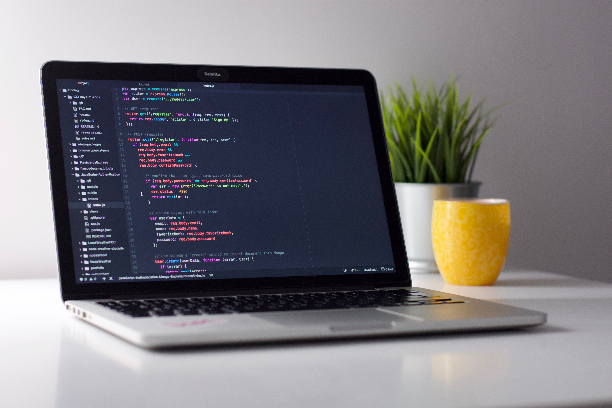
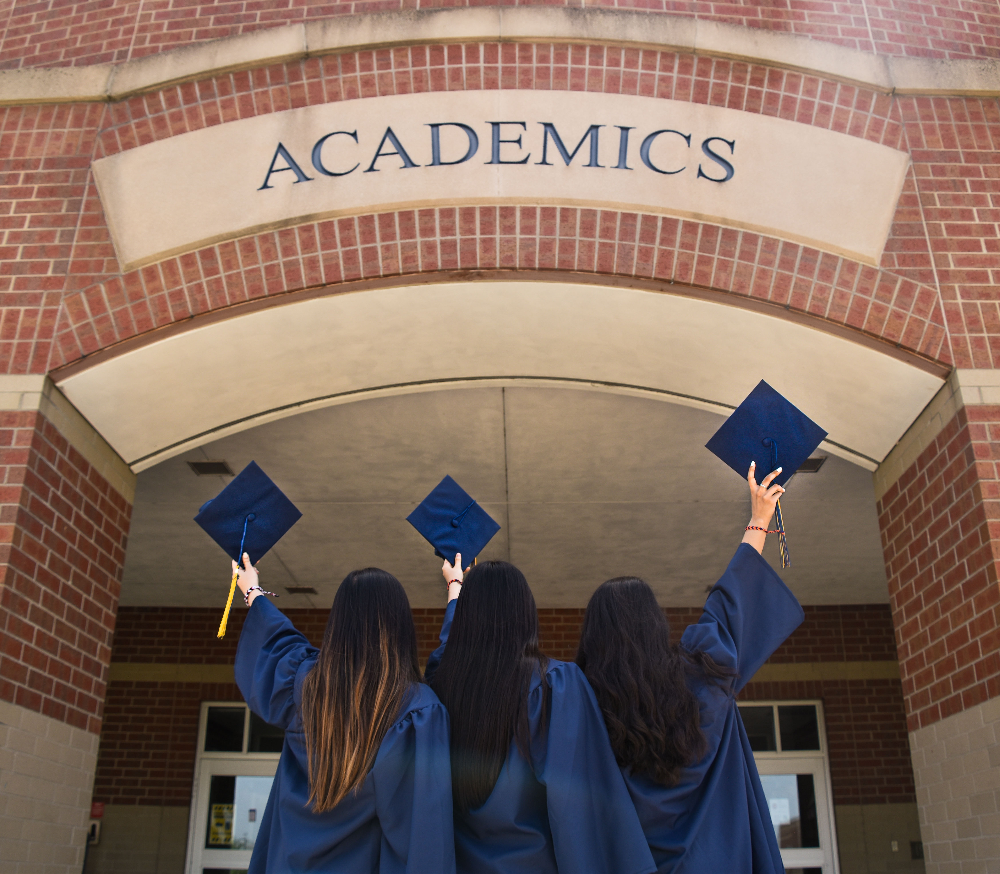
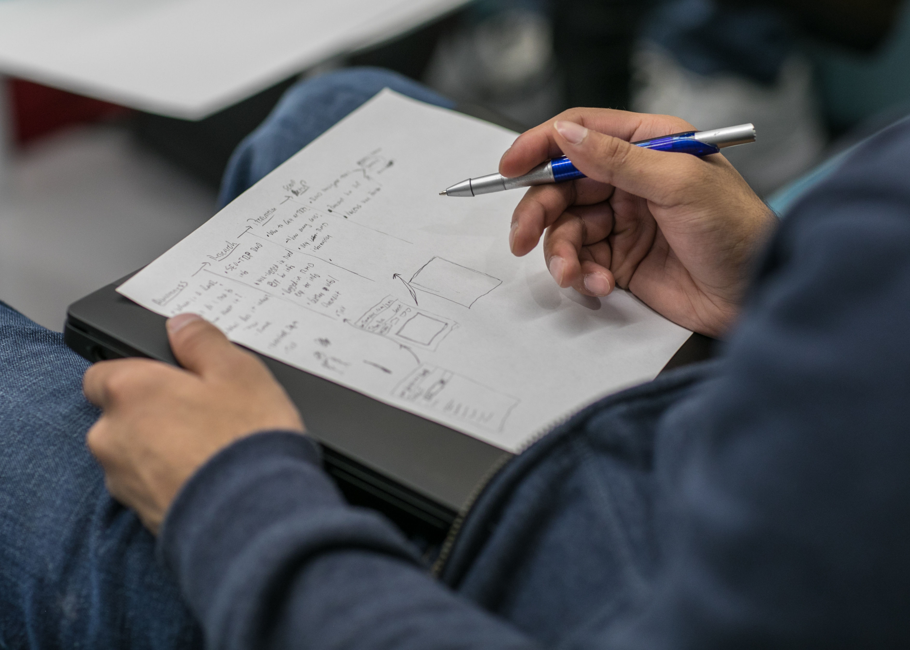

Hi , I'm Henson.
This is a html which is made by Henson first time. I hope you can like it!
1. Chart And Recommendation
< This is the relationship chart between the various courses of Computer Science I have drawn.>
Recommended Website
https://www.bilibili.com/ https://www.baidu.com/ http://www.lib.xjtu.edu.cn/ http://due.xjtu.edu.cn/ https://www.cnki.net/ https://www.icourse163.org/ https://www.liaoxuefeng.com/2. Understanding of Computer Science

计算机科学与技术专业并不仅仅是计算机编程，也不是一种生活中使用的工具。它是一门科学，也是一项技术。它分为硬件、操作系统、网络、软件、软件工程、算法、计算理论、网络安全、人工智能、机器学习等等。计算机最早在20世纪三四十年代被提出，距今历史已久，发展过程中也经历了许多的起起落落。也就是在这些起起落落之中计算机专业得以被提出和发展，最终推动了计算机的发展，改变了当今的世界。
计算机科学与技术会学习和研究整个计算机的生态系统，包括了计算机的软件、硬件和网络。它比软件工程等专业更加系统，更加全面，有助于我们对整个计算机生态系统的认知。目前来说，计算机专业中的人工智能方向比较热门。在5G的时代，万物互联辅以人工智能是未来十几年内发展的大趋势。AI能极大满足人们对智能化生活的需要。其技术的发展也符合了技术发展规律。除此之外，计算机专业本身就是利用计算机来解决人类不能很好解决的问题，通过高超的算力帮助人们更好的解决现实中的问题。计算机发展的背后是人们（客户）的需求，这会促使计算机专业不断向前发展。
3. My Academic Plan
大一
大一寒假
在上学期寒假要用心准备美赛，并积极参与。锻炼自己的团队合作能力和建模能力。提高自己阅读文献和英语读写能力。
之后还要接触 JS 学会使用Git Hub网站，为以后自主学习相关知识做准备。
大一下
学习方面，多参加一些学术性的讲座拓宽视野。同时保证熟练掌握Matlab，C语言有不错的水平。高分考过英语四级。暑假时学习Python并保证精通，掌握一些与科研相关的知识储备。积极参加相关竞赛。积极报名科创学院；娱乐方面，减少各种社团活动和组织活动的参加，只能参演一部话剧；体育方面，引体向上至少能拉13个，坐位体前屈保证指尖超过脚尖5cm及以上。1000米保证在3分50秒以内。
大二
学习方面：积极联系学校有关实验室，加入学校内一个实验室学习。锻炼使用英语学习和工作的能力。尤其是阅读全英文文献和网站。熟练掌握并精通Python或者C中任何一门语言。MatLab保证精通。高分通过英语六级考试。积极锻炼英语口语。寒假暑假积极参加相关竞赛，抓住时机。 体育方面：引体向上至少能拉15个，坐位体前屈保证指尖超过脚尖10cm左右。1000米跑步3分40秒以内必须保证。 娱乐方面：主动退出社团和组织，留出空余时间。
大三
学习方面：大部分时间放在学习上，尤其是专业课和基础课程。继续钻研精通语言，比那个其至少要用这门语言做出一个像样的成果。学习app开发，开发app。保证自己有一门独一无二的特长学科或者技能。暑假和寒假积极参加相关竞赛，抓住时机。提升英语口语与英语能力。英语考研单词全都背过一遍。尽量考托福和雅思。积极参加各种学术活动。 体育方面：保证肺活量在5000以上。1000米在3分40秒以内。坐位体前屈在10cm以上，引体向上在15个以上，最好在20个左右。
大四
学习方面：参加相关竞赛，锻炼自身。积极准备考研，保证自己在考研前1个月胸有成竹，做到心中有数。保证自己有一门独一无二的特长学科或者技能。 体育方面：体育锻炼保证游泳优秀，且其它标准保持在大三水平。
Brave Bingbing, never give up!